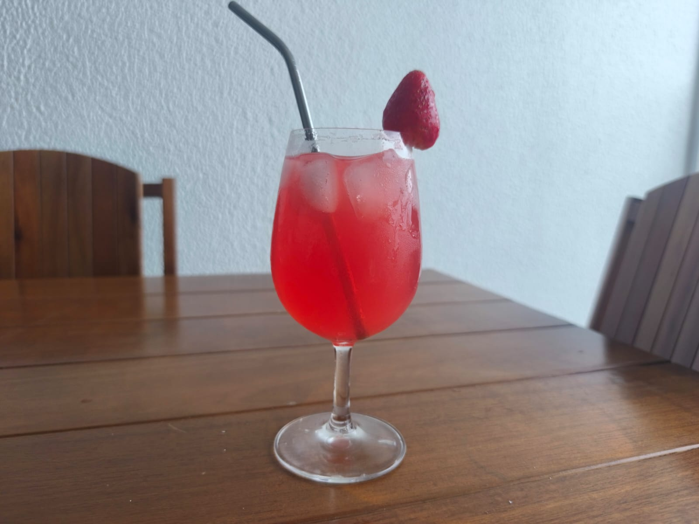
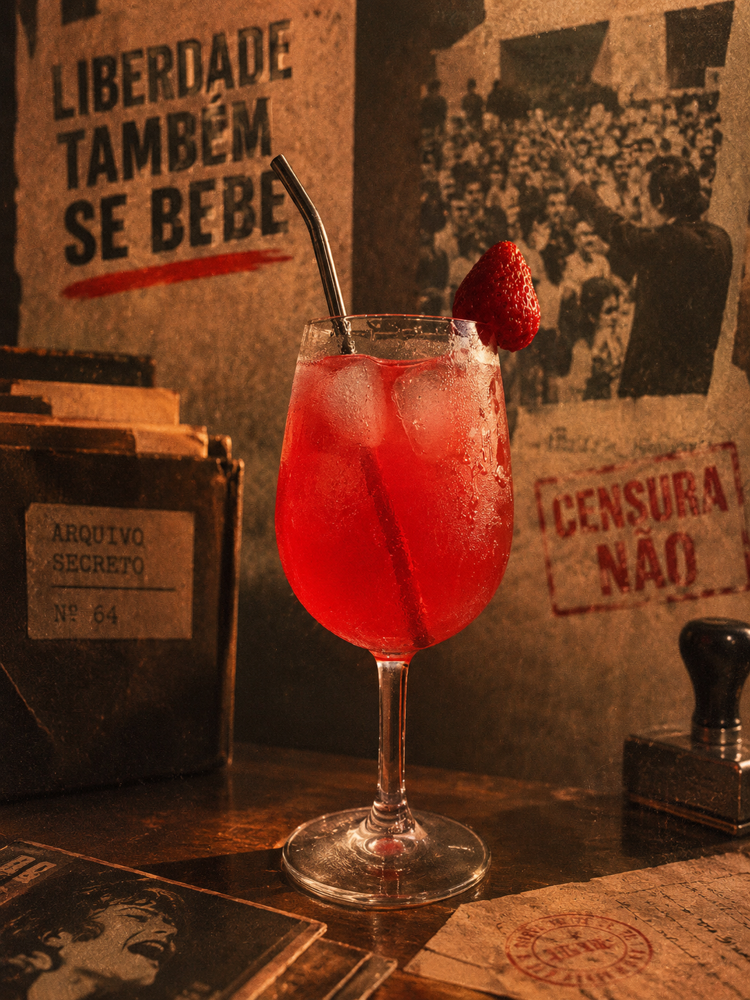

Composição registrada
Tequila prateada, licor de fogo, xarope de jambu, citrus e morango.
Faixa associada
O Carimbador Maluco · Raul Seixas
OUVIR / LOCALIZAR A FAIXANota de contexto
O personagem que exige carimbos e autorizações vira uma sátira da burocracia e do poder que controla a circulação. Lançada em 1983, a canção também pode ser lida como uma provocação à lógica de vigilância e controle que marcou a ditadura.
CONSULTA: ARQUIVO DE REFERÊNCIA